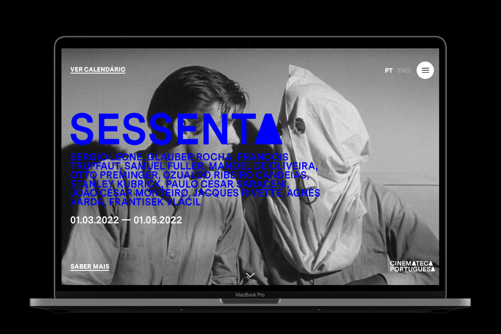
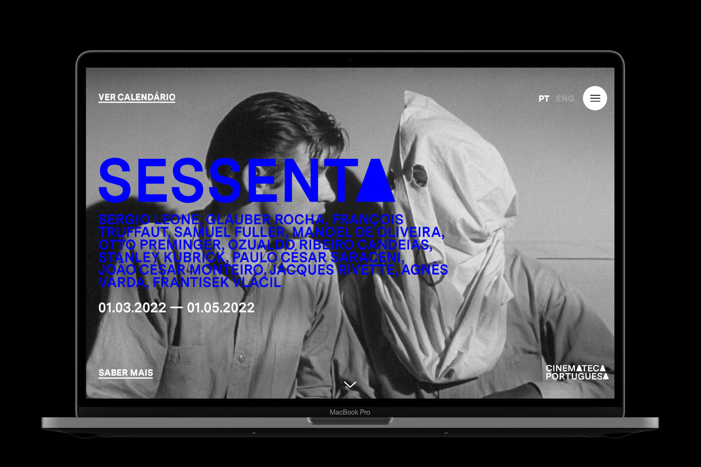

NOVA FESTA BRAVA
SOCIAL CAMPAIGN
GRAPHIC DESIGN AND BRANDING
©2023 NEW BLOOD AWARDS ENTRY
Cinemateca Portuguesa – Museum of Cinema is a public entity whose main goal is to protect, preserve and divulge cinematographic material. Cinemateca intends to publicize these materials mainly to keep alive the Portuguese cinematographic heritage alive. With this in mind, a graphic identity was created that is contemporary in character, yet harmonious with the concept of Cinemateca, which also serves as an archive or museum. The goal is, mainly, to revive the Cinemateca Portuguesa and reach a wider audience.
Therefore, the main purpose of this project was to redesign the graphic identity of Cinemateca Portuguesa. In this sense, it was proposed to develop a new brand strategy and all graphic communication of the same.
 

Cinemateca Portuguesa – Museum of Cinema is a public entity whose main goal is to protect, preserve and divulge cinematographic material. Cinemateca intends to publicize these materials mainly to keep alive the Portuguese cinematographic heritage alive. With this in mind, a graphic identity was created that is contemporary in character, yet harmonious with the concept of Cinemateca, which also serves as an archive or museum. The goal is, mainly, to revive the Cinemateca Portuguesa and reach a wider audience.
Therefore, the main purpose of this project was to redesign the graphic identity of Cinemateca Portuguesa. In this sense, it was proposed to develop a new brand strategy and all graphic communication of the same.